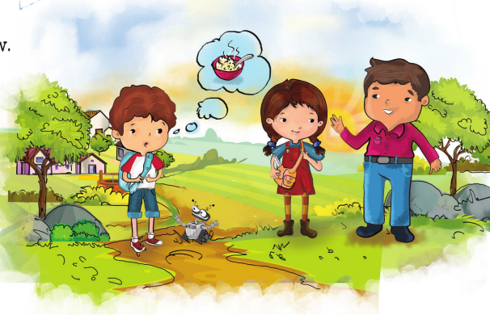
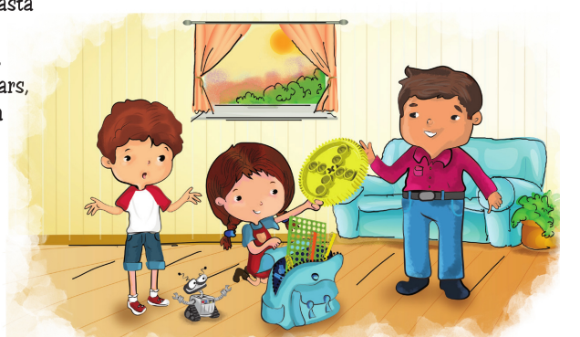
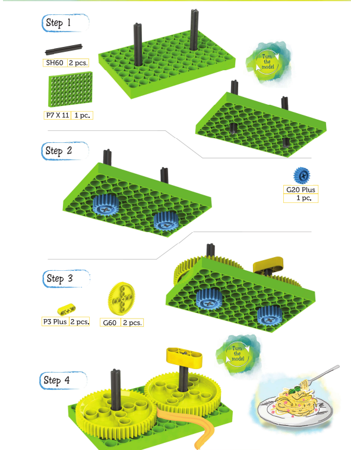

Kit:
Oh no!! I'm Starving now.
It's been a long day today.
Man: Please come to my house, and I'll quickly prepare delicious food for everyone. Kit and Laya couldn't refuse this tempting offer and went inside.

Man: Throughout our journey, the blix kit proved useful for problem solving. Hence, I request some blix pieces as well.
What was he going to do with the pieces, Kit asked curiously?
The man replied that his children always wanted to eat pasta but couldn't because they didn't have a pasta maker, and he would like to build a pasta maker machine.
Laya handed him the two gears, Shafts and P7 * 11 to make a Pasta quiller.
Robb started singing: "Twirl your fork, take a bite,
Pasta is delicious, oh what a sight!"

